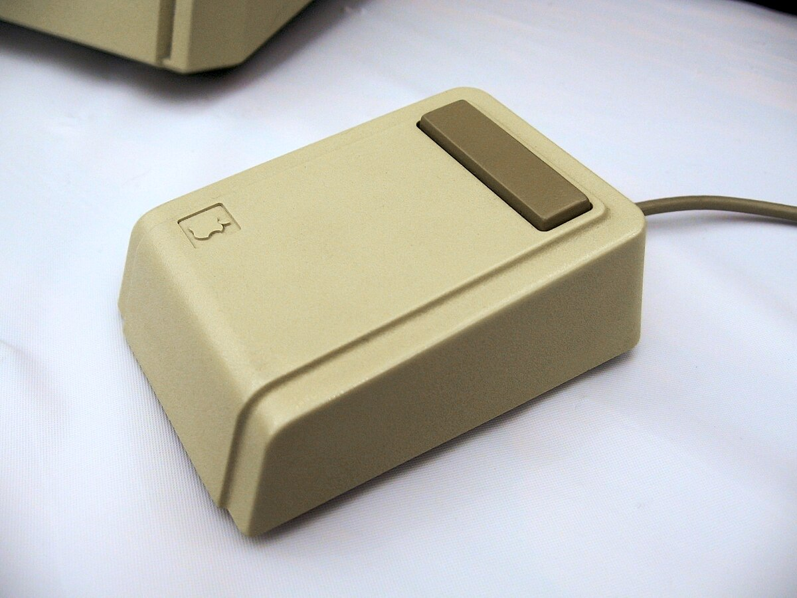

Sejarah Tentang Mouse
By Kelompok 2 Kelas A
Awal Mula: Trackball (1952)
Trackball ditemukan oleh Ralph Benjamin pada tahun 1952 Seorang insinyur di Royal Canadian Navy Service di inggris. Alat ini menggunakan bola besar yang dapat digerakkan untuk mengontrol kursor di layar. meskipun pada masa itu belum dimanfaatkan untuk komputer personal, Desain dari Trackball tidak pernah di patenkan, Trackball menjadi tonggal awal dari perkembangan perangkat cursor modern.
Mouse Pertama (1964)
Pada tahun 1964, Mouse pertama kali ditemukan oleh Douglas Engelbart di Stanford Research Institute. Mouse tersebut punya permukaan bodi berbentuk kotak dengan sudut yang membulat di bagian atas. Kemudian, di bagian atas kanan, terdapat satu tombol berwarna merah yang bisa ditekan. mouse ini terbuat dari kayu dengan dua roda yang dapat berputar untuk menggerakkan kursor di layar komputer.

Mouse Trackball Pertama (1968)
Pada tahun 1968, perusahaan Telefunken di Jerman merilis perangkat bernama Rollkugel (bahasa Jerman untuk "bola bergulir"). Rollkugel ini dianggap sebagai mouse trackball pertama, memiliki bola di bagian bawah sebagai penggerak kursor, serta satu tombol untuk interaksi. Perangkat ini digunakan terutama untuk menggambar grafik vektor pada sistem komputer Telefunken TR 440.

Mouse Optik Pertama (1980)
Pada tahun 1980, dua penemu independen menciptakan mouse optik pertama, yaitu Steve Kirsch dan Richard F. Lyon. Mouse optik ini berbeda dari mouse bola karena menggunakan sensor cahaya untuk mendeteksi gerakan di permukaan datar.
Mouse Komersial Pertama (1981)
Pada Tahun 1981, perusahaan Xerox meluncurkan komputer Xerox Star yang menjadi debut komersial pertama mouse komputer. Meski awalnya belum populer karena harga yang mahal, mouse kemudian semakin dikenal setelah dipakai pada Apple Lisa (1983) dan Macintosh (1984).
Mouse Konsumen Pertama (1983)
Mouse pada Apple Lisa 1983 menjadi salah satu terobosan penting dalam sejarah komputer pribadi. Apple Lisa adalah komputer pertama yang dijual massal dengan antarmuka grafis berbasis ikon, menu, dan jendela, sehingga membutuhkan perangkat input yang mudah digunakan. Untuk itu, Apple menghadirkan sebuah mouse sederhana berbentuk kotak dengan satu tombol. Desain ini terinspirasi dari penelitian Xerox PARC, tetapi Apple berhasil membuatnya lebih murah, tahan lama, dan praktis untuk diproduksi. Dengan mouse ini, pengguna dapat menggerakkan kursor di layar, memilih ikon, membuka menu, serta melakukan drag-and-drop. Kehadiran mouse pada Apple Lisa memperkenalkan cara baru berinteraksi dengan komputer, menggantikan perintah teks yang rumit, dan menjadi fondasi penggunaan mouse di komputer modern. 
Mouse Nirkabel Pertama (1984-1991)
Pada Tahun 1984, perusahaan Logitech memperkenalkan
mouse nirkabel pertama yang menggunakan teknologi infrared untuk
menghubungkan perangkat dengan komputer. Meski desainnya masih sederhana
dan bergantung pada baterai dengan daya tahan terbatas, Namun, Cordless MouseMan Keluaran 1991 adalah mouse pertama
yang berkomunikasi dengan sinyal radio, Hal ini memungkinkan Mouse Tersebut bekerja diluar jangkauan penerimanya, inovasi ini menjadi
langkah awal menuju perkembangan mouse tanpa kabel modern.

Mouse Ergonomis Pertama (1994)
Pada Tahun 1994, Jack Lo menciptakan dan mematenkan
sebuah mouse ergonomis revolusioner karena ketidaknyamanan yang
ia rasakan saat menggunakan mouse konvensional. Penemuannya ini merupakan mouse
pertama yang menopang tangan dalam posisi jabat tangan tegak penuh,
sehingga menghilangkan gerakan memutar lengan yang biasa dilakukan pada mouse biasa.
Produk ini kemudian dipasarkan sebagai Evoluent Vertical Mouse,
yang menjadi pionir dalam kategori vertical ergonomic mouse modern.

Mouse Gaming Pertama (1999)
Pada Tahun 1999, perusahaan Razer merilis Boomslang, yang dikenal sebagai mouse gaming pertama di dunia. Tidak seperti mouse lain pada zamannya, Boomslang dirancang dari awal khusus untuk kebutuhan gaming. Inovasi pentingnya adalah sensitivitas tinggi, menjadi mouse pertama yang menawarkan lebih dari 1.000 DPI. Dengan desain ergonomis unik dan presisi luar biasa, Boomslang membuka jalan bagi lahirnya industri periferal gaming modern.
Mouse Laser Pertama (2004)
Pada Tahun 2004, perusahaan Logitech meluncurkan MX1000 Laser Cordless Mouse, yang menjadi mouse pertama di dunia menggunakan teknologi laser tracking. Teknologi ini dikembangkan bersama Agilent Technologies dan menawarkan presisi jauh lebih tinggi dibandingkan mouse optik biasa, serta dapat digunakan di hampir semua permukaan. Inovasi ini membuka jalan bagi mouse modern berperforma tinggi, terutama untuk kebutuhan produktivitas dan gaming.
Mouse Giroskopik Pertama (2007)
Pada Tahun 2007, Logitech memperkenalkan MX Air Mouse, mouse giroskopik pertama yang dapat digunakan di udara tanpa alas datar. Dengan teknologi giroskop dan sensor gerakan, perangkat ini memungkinkan pengguna menggerakkan kursor hanya dengan mengayunkan mouse di udara, mirip remote kontrol. Inovasi ini menghadirkan cara baru berinteraksi dengan komputer, terutama untuk presentasi dan hiburan multimedia.
Mouse 3D Pertama (2010)
Pada Tahun 2010, perusahaan Axsotic memperkenalkan Axsotic 3D Spherical Mouse, sebuah perangkat input unik yang menggunakan bola transparan untuk mengendalikan objek dalam ruang tiga dimensi. Dengan teknologi enam derajat kebebasan (6DoF), pengguna dapat memutar, menggeser, dan memperbesar objek 3D secara lebih intuitif, menjadikannya alat inovatif untuk CAD, desain 3D, dan animasi digital.
Mouse Multi-Surface Pertama (2014)
Pada Tahun 2014, Logitech merilis MX Master, mouse pertama dengan teknologi Darkfield Laser Tracking generasi baru. Teknologi ini memungkinkan mouse digunakan di hampir semua permukaan, termasuk kaca, tanpa memerlukan mousepad khusus. Selain itu, MX Master hadir dengan desain ergonomis, roda gulir adaptif, dan konektivitas ganda, menjadikannya standar baru untuk mouse produktivitas premium.